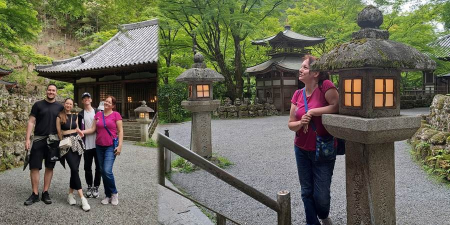
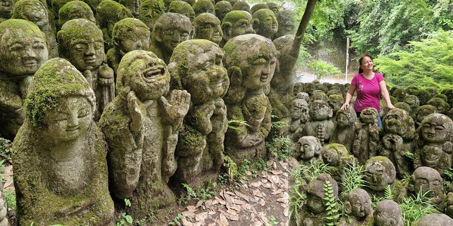
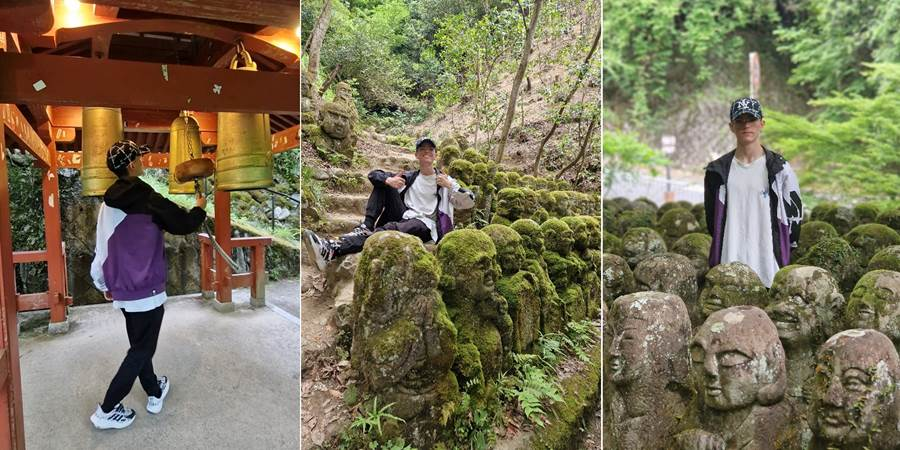
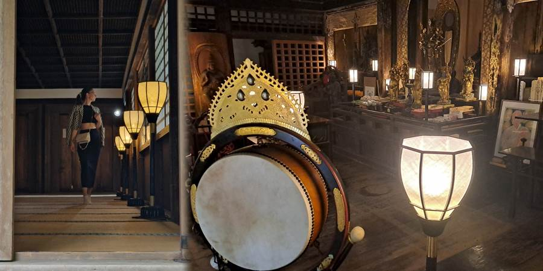
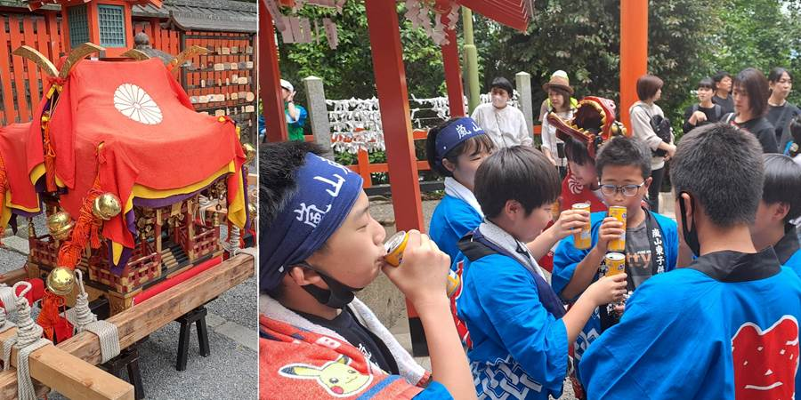
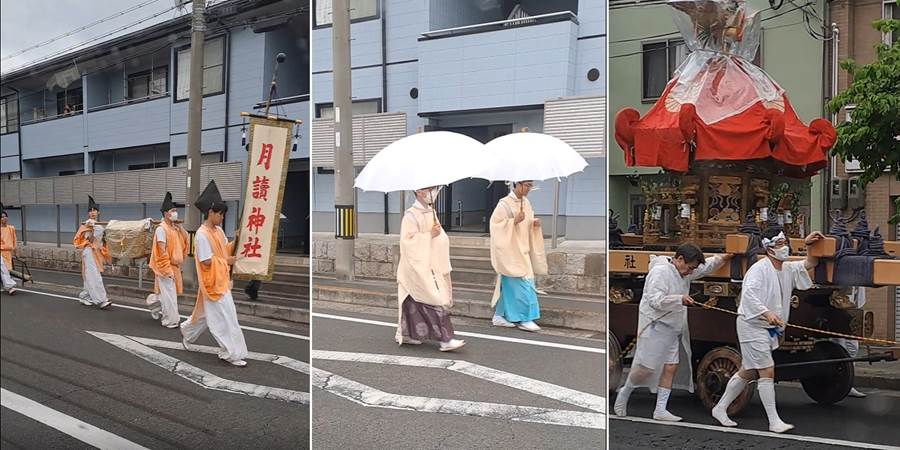
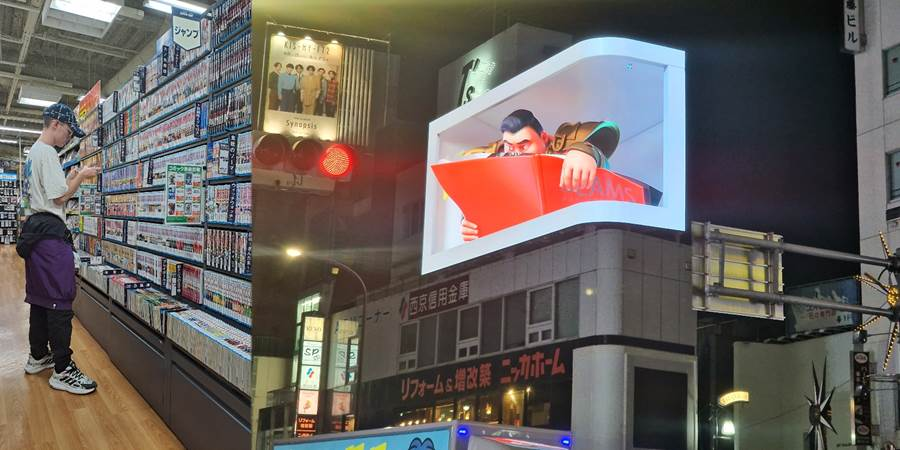

Dan deseti : Hram Hiljadu glava
Zatim smo išli u hram Hiljadu glava.
Imaju razne kamene statue. Ne bi me čudilo, što se Japanaca tiče, da nije 998 statua, nego tačno hiljadu. U stvari, ima ih hiljadu dvesta. A one su baš zanimljive. Ili se statua grohotom smeje, ili ima sunčane naočare, bokserske rukavice, drži mačku. Kažu da je svaki kamen dobio drugi umetnik amater i pravili su scene iz Budinog svakodnevnog života dok nije postao svetac. Drugi kažu da su to Budini učenici.
- Mnoge imaju humoristične, tople ili neobične izraze – neke se smeju, neke drže limenku piva, druge sviraju instrumente.
- Prikazuju ljudsku prirodu i emocije: tugu, radost, smeh, pospanost...
- Time se želi reći da svetost nije daleka i uzvišena, već da duhovnost može biti bliska, obična, nasmejana.
I hram je lep. U zelenilu. Ima izvor vode sa metalnim zmajem u pozadini.
   Kad smo se vraćali taksijem nailazili smo na parade. Ljudi obučeni u belo. Neki podsećaju na sumo rvače po odeći ali nisu. Nose na nosilima neku džombu. Pitamo šta je to. Kaže taksista, festival seobe Boga. U toj džombi živi Bog. Mole se za dobro zdravlje.
 Uveče smo išli u njihove prodavnice: Nintendo, anime, polovna tehnika, po dečijoj želji. Našli su ponešto pa se raduju. Petar nije tražio sebi nego drugarima pa se raduje kad nađe. Duša. Našli su i Dušku iPhone telefon.
Kupili smo u prodavnici onu njihovu čuvenu, skupu govedinu meliranu sa belim (kobe). Kupili malo za probu. Spremili i ništa posebno. Nije žilava al je i dalje govedina.
Rade obično do 16h. Parkovi, hramovi. Obavezno svuda proveriti radno vreme čak iako je besplatno i deluje da je na otvorenom prostoru, kao što je park.
Keš obavezno nositi sa sobom. Na primer u hramu Niko primaju samo keš a ne znam da li u blizini postoji ATM za dizanje keša.
Gledam slike iz hrama Hiljadu glava. Na nekima se čudno smešim stitnutih usana. Setila se da mi je tad došlo iz svemira da ne smem da pokazujem zube. Zabrana, ne pokazuj zube majmunima kasno pali.
Deca su potpuno poludela za hvatanjem Pokemona na telefonu po Japanu.
Rekla mi je drugarica da je ono ljubičasto nebo što nit je zalazak, nit je izlazak sunca iz aviona, što je trajalo sat vremena pa sam zaspala, ustvari Aurora borealis koja je tad bila aktivna i da smo srećnici. Uauuu.
Kaže Luka bukvalno se svi klanjaju. Klimnu glavom. Šta sam ja očekivala? Naklon do poda?
Vozi taksista. Upali mu se crveno na semaforu ispred nosa. Taksista kaže hmmm i lagano prođe kroz crveno. Još jedan netipičan japanski postupak, kršenje pravila.
Ali sve rade lagano, bez stresa, sporo. Isprave te uz smešak.
Ne propustite sledeću avanturu!
Kad Sandra krene u novi kraj sveta, vaš inbox prvi sazna. Prijavite se i stižu vam sve nove priče mejlom.